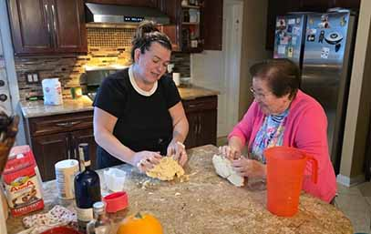
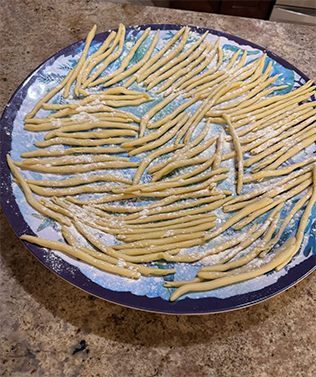
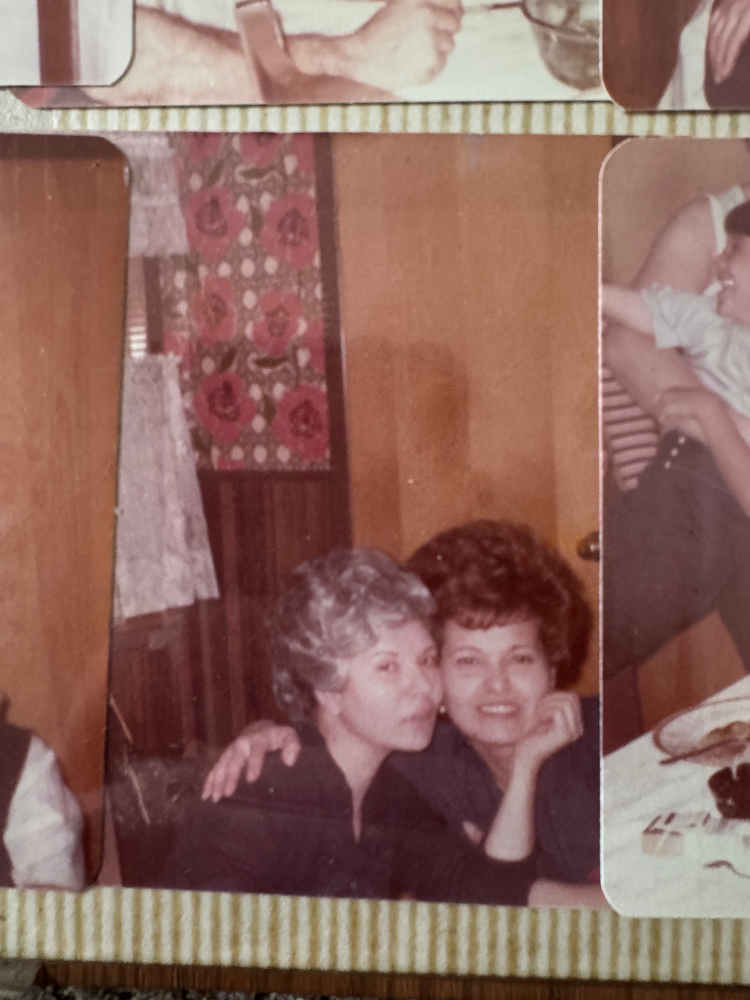
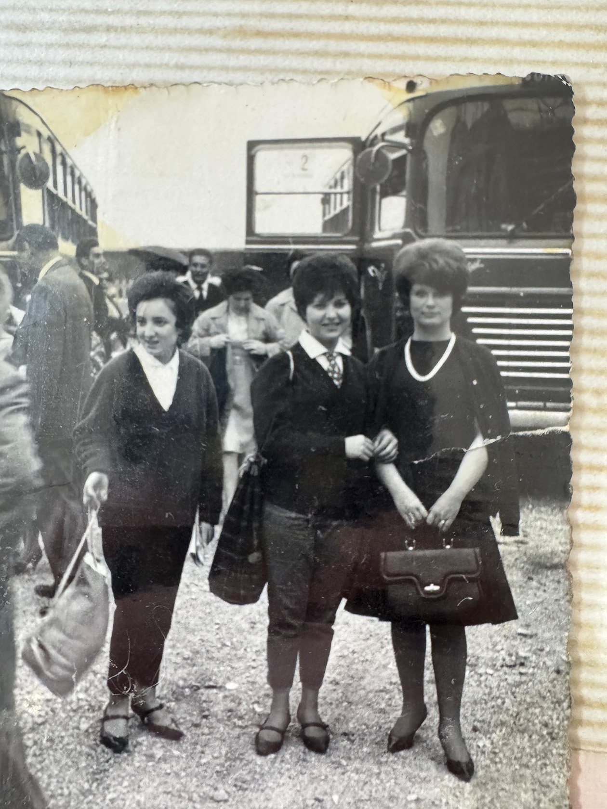
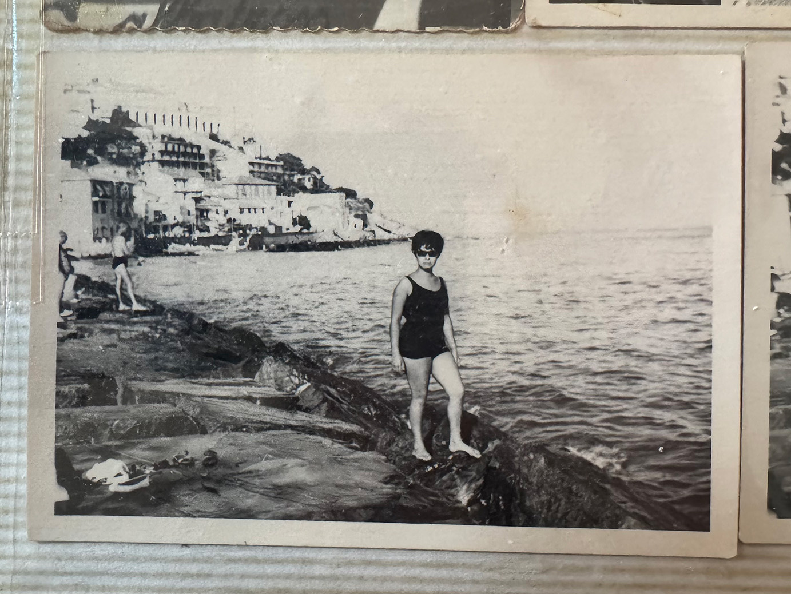
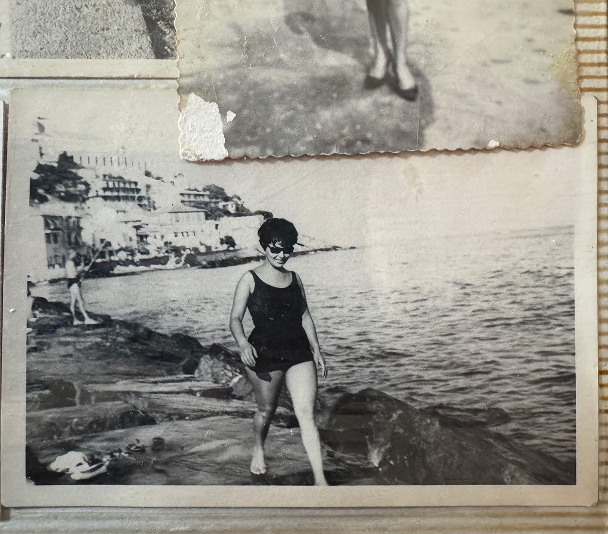
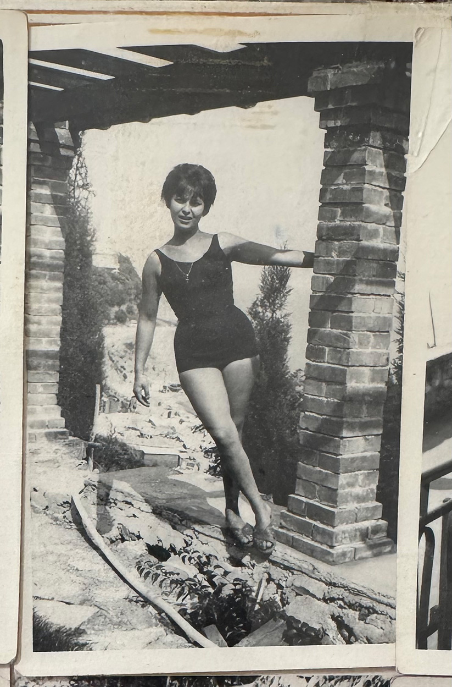

This week's recipe is dedicated to my maternal grandma and her sister-in-law, my great aunt Gianna. My grandma received a dementia diagnosis a few months ago and we have been trying to keep her engaged with loved ones and to make food she grew up eating. My grandma and Gianna are very close, and talk on the phone every night if they did not see each other that day. I also love (Zia) Gianna because of her calm nature that reminds me of my grandpa (her brother) that passed.
My family decided to make homemade pasta using semolina flour, though it involves lots of kneeding and muscle work. It turned out delicious as a result of all the hard work behind it!
I was not there to cook the pasta and sauce, but the recipe is as follows: Make the dough, kneed until smooth. Once smooth, cut into small pieces. Place the piece in a thin tube and roll around to create long, macaroni-like shapes with holes in the middle. Place into salted, boiling water and serve with desired sauce.








